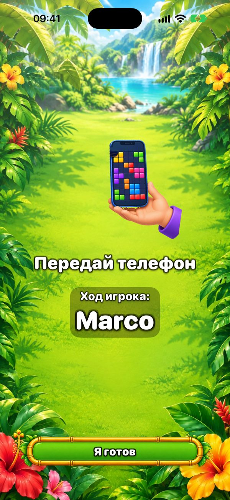
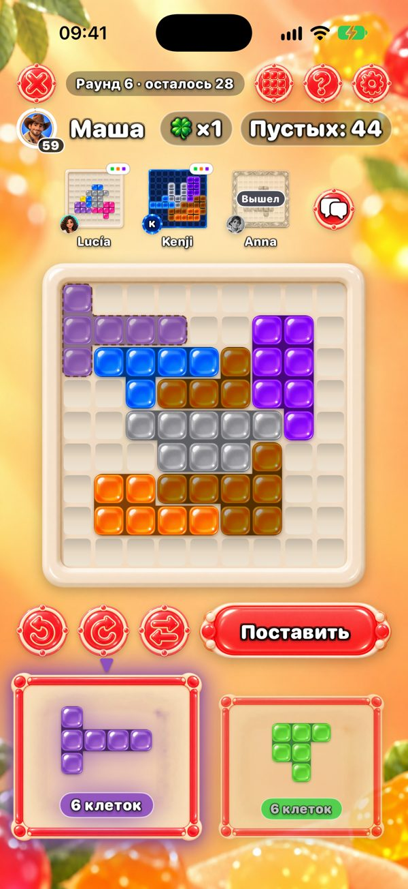
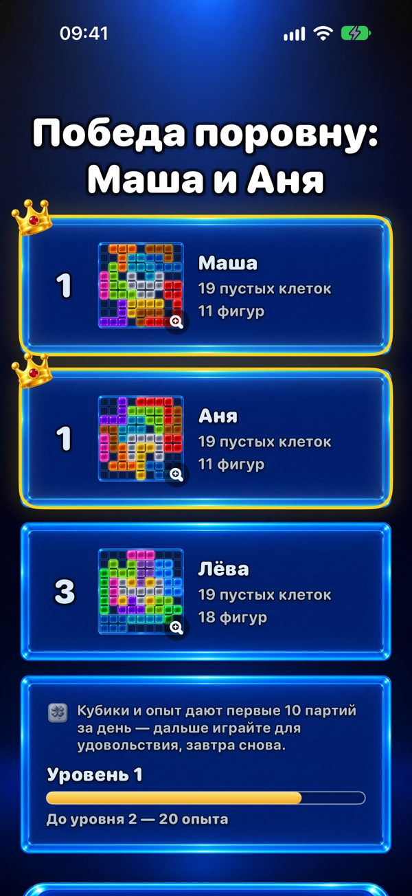

Игра для всей семьи на одном телефоне
Ищете, во что поиграть всей семьёй на одном телефоне? One More Chance — головоломка, которую передают по кругу: каждый заполняет своё поле 9×9 одними и теми же фигурами, а побеждает тот, у кого останется меньше пустых клеток.


Как играть на одном телефоне?
Каждый начинает со случайной стартовой фигуры, которая закрывает центр поля. Дальше каждый раунд открываются две фигуры. Первый игрок выбирает одну и ставит её в любое место своего поля — фигуры можно поворачивать и отражать — и передаёт телефон. Экран «Передай телефон» показывает, чей ход. Фигуры у всех одни и те же, так что раунд честный; поля просто растут по-разному.

Сколько человек может играть?
Двое — бесплатно. С Premium — одна покупка, без подписки — до шести человек на одном телефоне или iPad. Для большой компании iPad на столе — то, что нужно.
Можно играть каждому на своём телефоне?
Да. Телефоны рядом соединяются по Bluetooth и Wi‑Fi — интернет не нужен — и все ходят одновременно, видя сверху поля остальных. Premium для игры больше чем вдвоём нужен только тому, кто создаёт игру.

Кто побеждает?
Тот, у кого меньше пустых клеток. Если ни одна фигура не влезает, вы берёте «Ещё один шанс»: дополнительную фигуру только для себя. Идеальное, полностью заполненное поле — высший класс.

Сколько длится партия?
Партия — не больше 20 раундов. Одному — несколько минут; в компании зависит от того, сколько каждый думает, ведь ход — это одна фигура. С Premium можно ограничить ход 30, 60 или 90 секундами.
С какого возраста?
В App Store у игры рейтинг 13+ из-за необязательной переписки с друзьями и рекламы. Сама игра — цветные фигуры на поле: без насилия, без спешки, если не включать таймер, и чтобы поставить фигуру, не нужно уметь читать — младшие дети могут играть рядом со взрослым.
Это бесплатно? Есть реклама?
Игра бесплатная. Реклама бывает только между одиночными партиями — никогда в игре с друзьями, ни на одном телефоне, ни на нескольких. Premium убирает рекламу и добавляет ещё шесть тем и до шести игроков.
Нужен ли интернет?
Нет. На одном телефоне и на нескольких телефонах рядом игра работает без интернета. Он нужен только для онлайн-столов, друзей и места в мире в Вызове дня.
Сегодня вечер игр?
Бесплатно на iPhone и iPad. Передайте телефон и узнайте, у кого останется меньше пустых клеток.
Версия для Android — скоро.